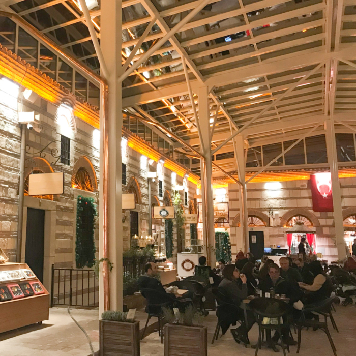

Исторический хан Бета


Hasircilar Cad. No:23 Tahtakale Mahallesi, Стамбул 34116 Турция
Исторический хан был построен в 1671 году на средства фонда Казаскера Абдулкадыра Эфенди и был известен под названием Хасырджылар хан. В то время, большинство ханов строилось в два-три этажа, и данное здание не было исключением. Но второй этаж был разрушен вследствие пожара, а затем, в 1894 году, постройка пострадала также и от землятресения.
Именно данный хан был первым, специализирующимся на обработке, хранении и продаже кофейных зерен и кофе.